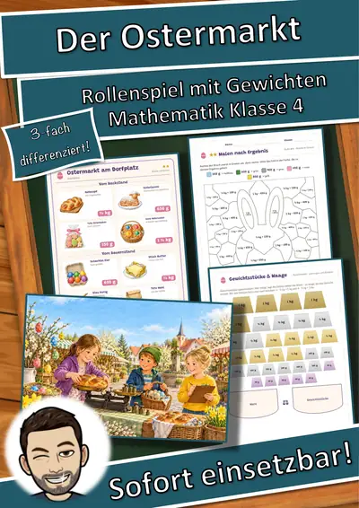
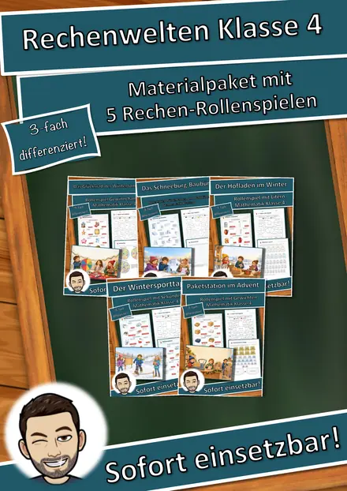
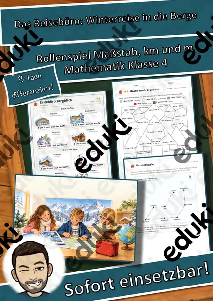
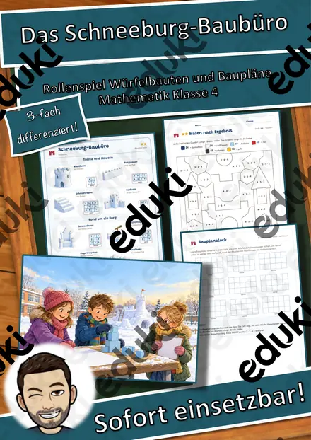
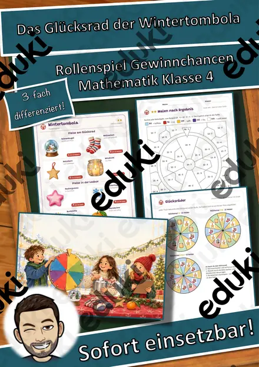
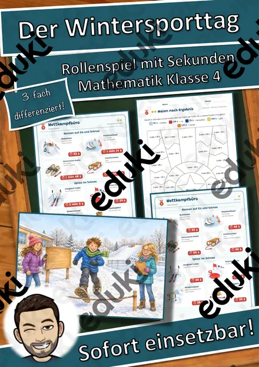
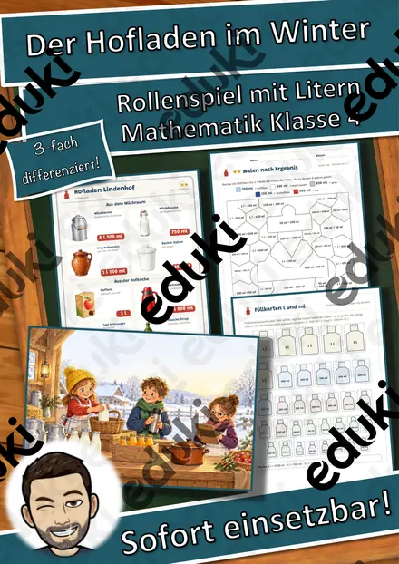
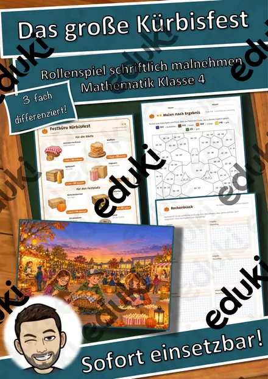

Die Kinderpunsch-Bar – Rollenspiel Brüche in Größen: ½ l, ¼ l, ¾ l und Milliliter, 3-fach differenziert (Klasse 4)
Mein Klassenzimmer wird zur Kinderpunsch-Bar! In diesem Rechen-Rollenspiel für Klasse 4 mischen die Kinder alkoholfreien Punsch aus Tee und Saft: Sie rechnen mit ½ l, ¼ l und ¾ l, wandeln in Milliliter um, bündeln und planen große Mischungen für das Winterfest – ganz ohne Computer oder Tablet.
Dreifach differenziert – alle Kinder spielen gemeinsam am Tisch und rechnen trotzdem auf ihrem Niveau:
- ★ ½ l, ¼ l und ¾ l addieren, ergänzen, Grenze prüfen
- ★★ Bruchteile in ml umrechnen, l und ml bündeln
- ★★★ viele gleiche Kannen, Mischungen, Mehrschritt-Aufgaben
Enthalten (25 Seiten + Deckblatt):
- Hinweise für Lehrkräfte mit Stundenablauf, Lehrplanbezug (LehrplanPLUS Bayern), Kopierplan und ausgefülltem Beispiel
- 3 Punschkarten (★/★★/★★★) mit 8 illustrierten Waren
- Standschild, Rollenkarten (Gäste · Mischen · Punschprobe) und Satzstreifen für DaZ
- 3 Mischzettel mit Ich-kann-Leiste und Partnerkontrolle
- 12 Auftragskarten
- Knobel-Punschtopf mit 9 Aufgaben für schnelle Rechner
- Ausmalbild für schnelle Rechner
- Malen nach Ergebnis in 3 Stufen (★ ½ l, ¼ l, ¾ l · ★★ Bruchteile und ml · ★★★ Mischungen) – das Ergebnis verrät die Farbe, am Ende erscheint ein Glas Kinderpunsch
- Lösungen zur Selbstkontrolle (auch farbige Lösungsbilder zu Malen nach Ergebnis)
- Urkunde „Punsch-Profi“ farbig und zum Ausmalen
Viel Freude an der Kinderpunsch-Bar wünscht Snice
FachMathematik
KlasseKl. 4
SchulformGrundschule
MaterialartArbeitsblätter, Stationenlernen, Mal- und Bastelvorlagen, Fördermaterial/Inklusion
Ähnliche Materialien

Der Ostermarkt – Rollenspiel Gewichte mit Brüchen ½ ¼ ¾ kg, 3-fach differenziert (Klasse 4)

Materialpaket Rechenwelten im Winter für die 4. Klasse: 5 Mathe-Rollenspiele, 3-fach differenziert (Wintertombola, Schneeburg, Paketstation & mehr)

Das Reisebüro: Winterreise in die Berge – Rollenspiel Maßstab, Kilometer und Meter, 3-fach differenziert (Klasse 4)

Das Schneeburg-Baubüro – Rollenspiel Würfelbauten, Baupläne und Rauminhalt, 3-fach differenziert (Klasse 4)

Das Glücksrad der Wintertombola – Rollenspiel Gewinnchancen und Wahrscheinlichkeit, 3-fach differenziert (Klasse 4)

Der Wintersporttag – Rollenspiel Sekunden, Minuten und Sekunden umwandeln, Rangliste, 3-fach differenziert (Klasse 4)

Der Hofladen im Winter – Rollenspiel Hohlmaße l und ml, 3-fach differenziert (Klasse 4)
